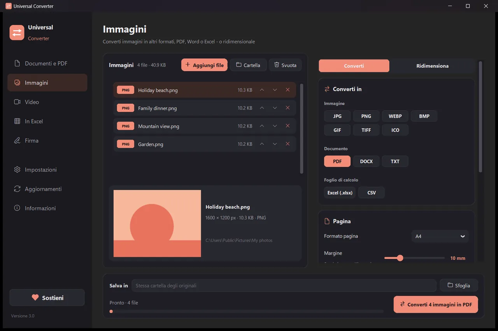
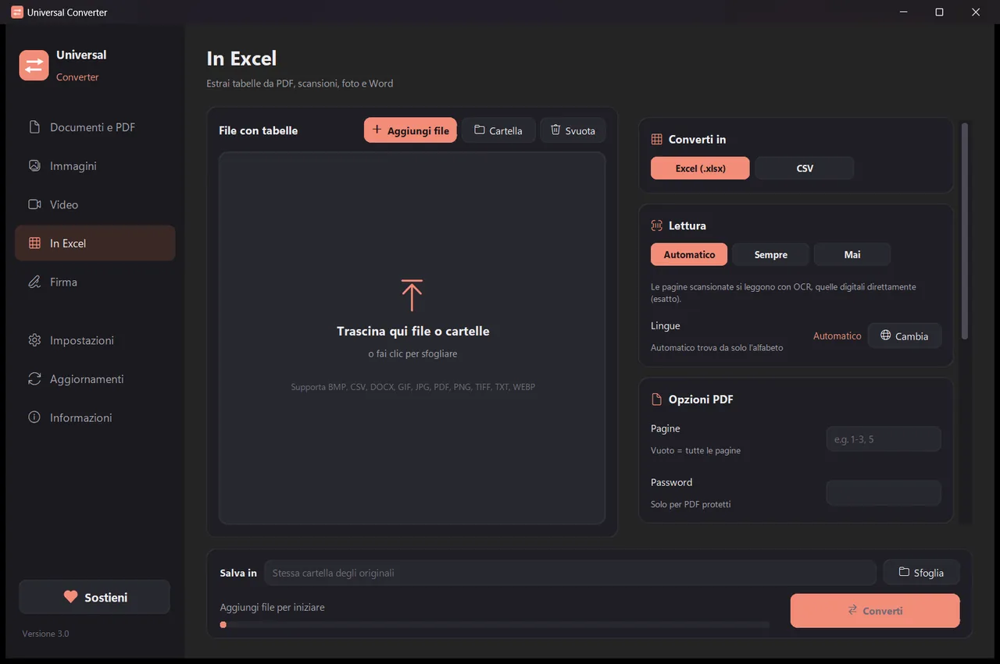
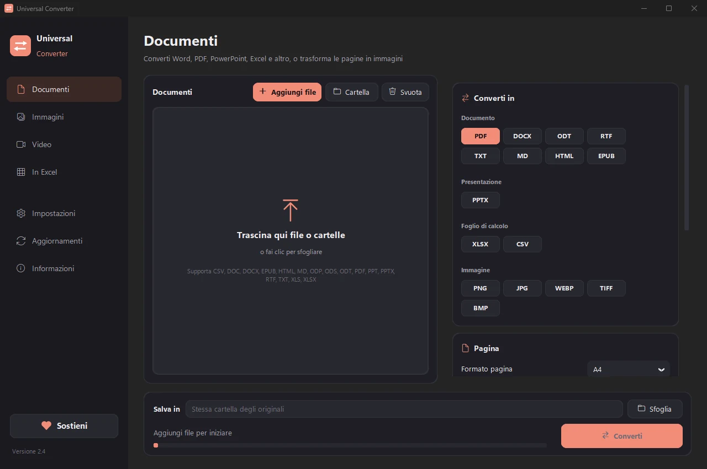
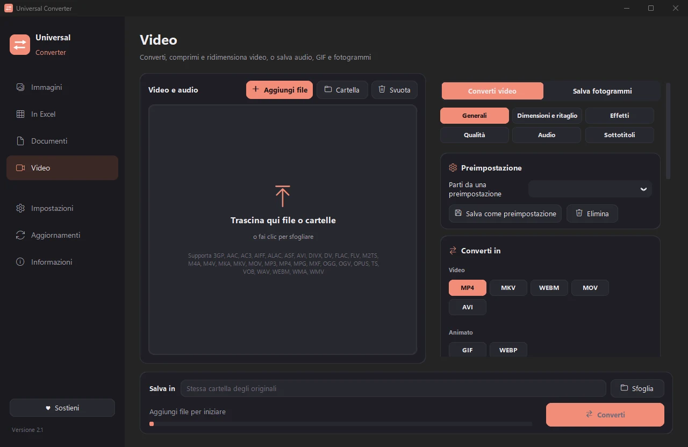

Converti i tuoi file sul tuo dispositivo
Immagini, documenti, video e audio, PDF e tabelle in Excel, tutto in un'unica app. Non viene caricato nulla: i tuoi file non lasciano mai il dispositivo.
Come installare e aggiornare
- Apri il file .dmg scaricato e trascina Universal Converter in Applicazioni.
- Apri l'app. La prima volta macOS la blocca perché non è firmata da Apple: fai clic su Fine.
- Apri Impostazioni di Sistema > Privacy e sicurezza, scorri in basso, fai clic su «Apri comunque» e inserisci la password. Si fa una sola volta.
Aggiornamenti: se lo consenti alla prima apertura, l'app cerca nuove versioni a ogni avvio, ne verifica la firma digitale e le installa quando scegli tu.
Come installare e aggiornare
- Tocca «Scarica per Android» dal telefono.
- Apri il file scaricato. Se Android lo chiede, consenti al browser o al gestore file di installare app.
- Tocca Installa.
Aggiornamenti: l'app controlla circa una volta al giorno e ti avvisa quando c'è una nuova versione. Scaricala allo stesso modo e installala sopra quella vecchia; le impostazioni restano.

Privato
Tutto avviene sul tuo dispositivo. Nessun caricamento, nessuna coda, nessun limite di dimensione.
Gratis
Gratuito, senza pubblicità, senza account e senza filigrane.
10 lingue
Italiano, inglese, greco, spagnolo, tedesco, francese, portoghese, cinese, giapponese e coreano.
Quattro strumenti in una finestra
Immagini
Converti tra JPG, PNG, WEBP, TIFF, BMP, GIF e ICO. Ridimensiona in pixel, percentuale o dimensione del file, unisci immagini in un PDF o Word e leggi il testo nelle immagini (OCR).

In Excel
Estrai tabelle da PDF, scansioni e foto in Excel o CSV: estratti conto, fatture, listini prezzi. Legge italiano, inglese, greco e oltre 30 altre lingue.

Documenti
Converti tra PDF, Word, ODT, RTF, TXT, Markdown, HTML, EPUB, PowerPoint ed Excel. Trasforma pagine in immagini e unisci più file in un PDF. Caratteri, dimensioni e colori vengono mantenuti.

Video
Converti e comprimi video in MP4, MKV, WebM, MOV o AVI con AV1, H.265, H.264 o VP9. Taglia, ritaglia, ruota e ridimensiona, crea GIF, salva fotogrammi come immagini o tieni solo l'audio in MP3, M4A, FLAC, WAV, OGG o Opus. Su Android: MP4 o MKV con H.264 o H.265, taglio, ritaglio, rotazione, salvataggio di fotogrammi o l'audio in M4A.
- Usa la scheda grafica per i video quando può: di solito da 5 a 20 volte più veloce.
- Trascina intere cartelle: tutti i file vengono convertiti in una volta.
- Ti avvisa delle nuove versioni; su Windows e Mac può installarle per te, verificate digitalmente.
- Aspetto chiaro o scuro, come il tuo dispositivo.
Come funziona
- Apri Universal Converter e scegli Immagini · In Excel · Documenti · Video a sinistra.
- Trascina i file o un'intera cartella nella finestra, oppure fai clic su Aggiungi file.
- Fai clic su Converti. I nuovi file vengono salvati accanto agli originali o nella cartella che scegli.
Cosa può fare
- Comprimere un video senza caricarlo
- Convertire video tra MP4, MKV, WebM, MOV e AVI
- Salvare l'audio di un video in MP3
- Creare una GIF da un video
- Estrarre tabelle da un PDF in Excel
- Unire foto in un unico PDF
- Convertire un PDF in Word
- Unire più file in un PDF
- Copiare il testo da un'immagine (OCR)
- Convertire immagini tra JPG, PNG, WEBP e altri formati
- Ridimensionare immagini o ridurle a una dimensione del file
- Convertire un estratto conto PDF in Excel
- Estrarre tabelle da fatture PDF in Excel
- Trasformare un documento scansionato in un Word modificabile
- Convertire pagine PDF in immagini JPG
- Convertire documenti Word in PDF
Domande
È davvero gratis?
Sì. Universal Converter è gratuito, senza pubblicità, senza account e senza limiti di tempo. Se ti è utile, puoi sostenerne lo sviluppo con un contributo volontario, ma non è mai obbligatorio.
I miei file vengono caricati da qualche parte?
No. Ogni conversione avviene sul tuo dispositivo, quindi funziona anche senza connessione a internet. L'app si collega solo per controllare gli aggiornamenti, per scaricare le lingue aggiuntive che scegli e, se lo consenti, per inviare segnalazioni di errori anonime.
Windows mostra un avviso SmartScreen. È normale?
Sì. Il programma di installazione non ha ancora una firma del codice, quindi Windows non lo riconosce. Scegli «Ulteriori informazioni», poi «Esegui comunque». Gli aggiornamenti successivi sono verificati digitalmente dall'app stessa. Oppure installalo da Microsoft Store, che non mostra avvisi.
Come lo apro su un Mac?
Apri il file scaricato e trascina Universal Converter in Applicazioni. L'app non è firmata da Apple, quindi la prima volta macOS la blocca: apri Impostazioni di Sistema > Privacy e sicurezza e fai clic su «Apri comunque». Basta farlo una volta.
Come lo installo su Android?
Scarica l'APK sul telefono, aprilo e consenti l'installazione quando richiesto (Android 10 o successivo). Inglese e greco sono inclusi; le altre lingue si scaricano nelle Impostazioni dell'app. L'app ti avvisa quando c'è una nuova versione.
In quali lingue è disponibile?
L'app è in italiano, inglese, greco, spagnolo, tedesco, francese, portoghese, cinese, giapponese e coreano. Scegli la lingua durante l'installazione o in seguito nelle Impostazioni.
Sostieni Universal Converter
Universal Converter è creato da una sola persona e resta gratuito. Se ti fa risparmiare tempo, un contributo volontario aiuta a portarlo avanti. I pagamenti passano da PayPal o Revolut e l'app non vede mai i tuoi dati di pagamento. I contributi sostengono il suo ulteriore sviluppo e i suoi costi. Non sono deducibili fiscalmente.